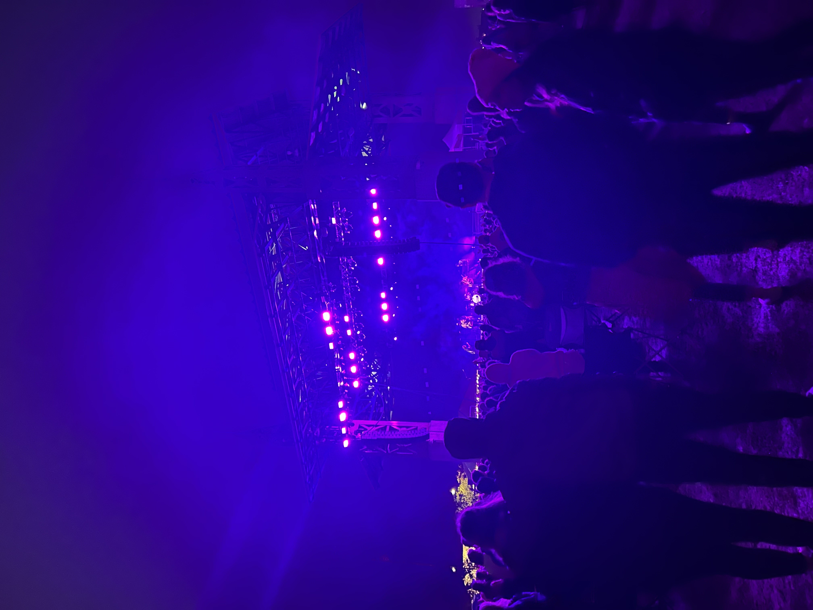
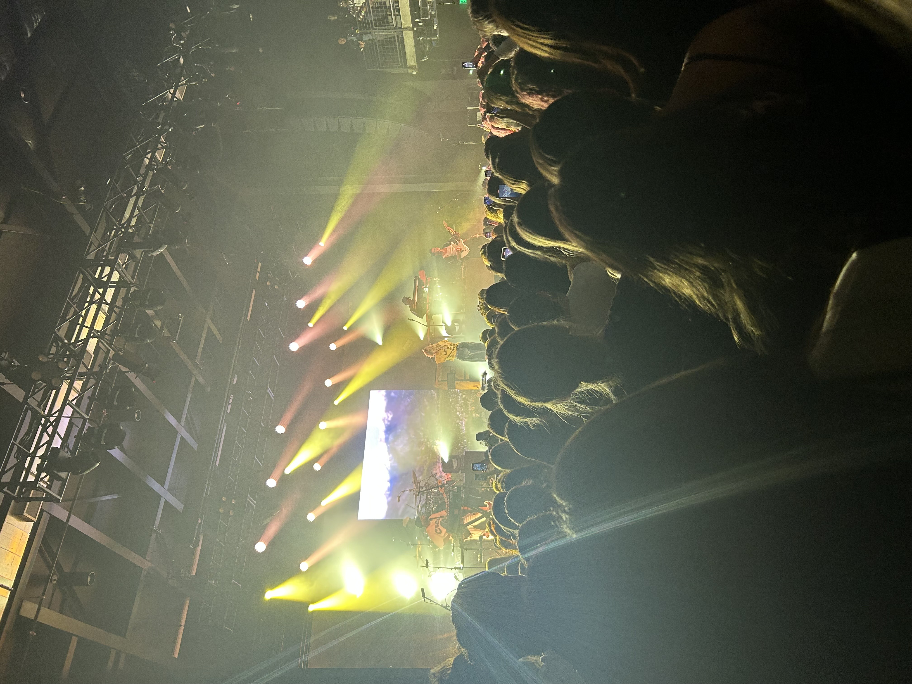
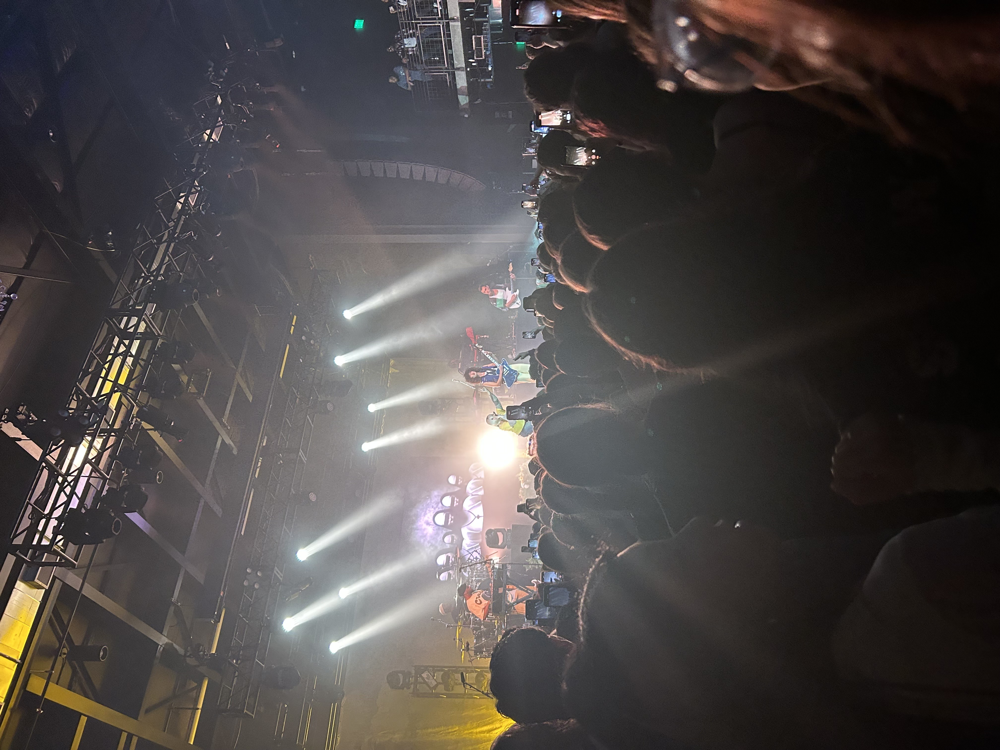
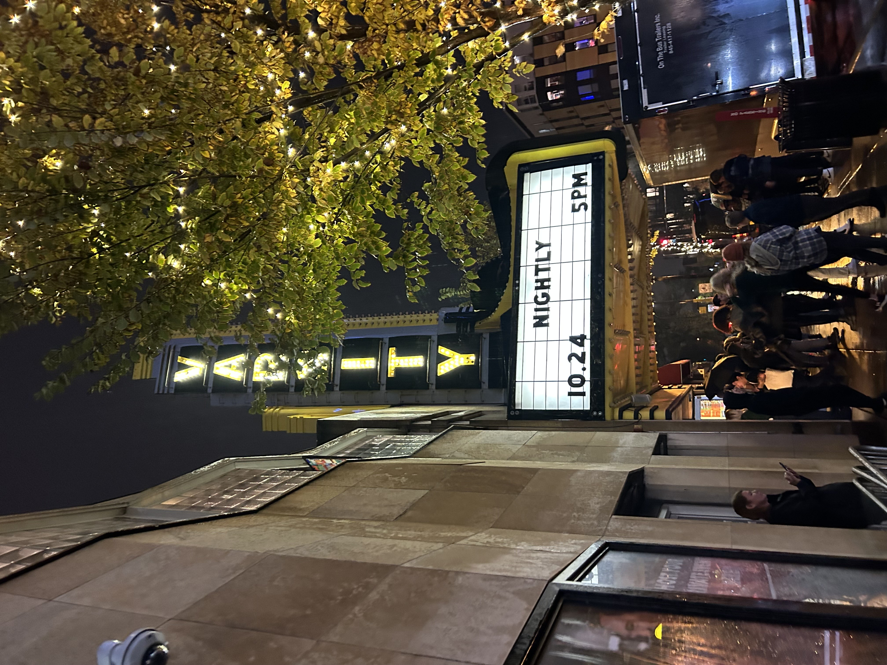

Home
Tour - 2025
Merch
Contact
Go to last slide
Go to next slide

Go to previous slide
Go to next slide

Go to previous slide
Go to next slide

Go to previous slide
Go to next slide
Go to previous slide
Go to first slide
